Team Name: Anti Coder x2 Club
Team Members: Mario Alfaro-Hernandez, Chaz Cooper, Dechen Chuteng, Desmond DesBoine, Hailey Gonzales, Tia Yang
Client: Gary Nguyen, Lisa's Nails
Advisor: Prof. Yang
Background: Lisa and Gary Nguyen are the client's names. They own a nail salon called Lisa's Nails. They've been wanting to modernize the business. We plan to solve their problem by creating a website for Lisa's Nails. The website will include information about their business, their services as well as an appointment booking system.
Scope: The scope is the business area affected by the installation of the product. The website will give the business a more online presence. Client experience will be affected since the end users will be able to make appointments online and see the business's services easier. Worker schedules will now be digitalized along with client information. We've address the owner's want to digitalize their record keeping by installing a database. Our project goals are to make a full-stack website that will enable end users to make appointments and save their information in an account. Workers will be able to have their availability shown on the site. Overall, our goal is to develop and deliver a software system to the benefit of the Product Owner and user community.
Proposed Solution: Our proposed solution was to first address the problem of paperwork and move everything electronically, with this in mind we decided a database would address this problem perfectly. Next we wanted to allow easier access for consumers, so combining these concepts a website was the best option to cover all bases. The website would allow customers to see what our client has to offer while keeping a simple database for our client to use.This allows for appointments to be scheduled through the website and provide our client and their customers with notifcations of each appointment being made. As well as, allowing staff to easily set up their schedule for upcoming weeks.
Highlights: Our project is special because it's to help a local business keep up with today's online-focused business format. Local business are more easily discovered if they have a website, and will be visited more often if people know the services offered. Our design is innovative because we are allowing the end users to schedule their service-specific appointments while choosing their favorite technician, if they have one. We also plan to allow workers to reschedule, delete, or change booked appointments and update their availability. We've been told that this may be hard to implement, but if we succeed, it's what will make our project special and innovative.
Prototypes: We utilized Adobe XD tool to produce a clickable high fidelity prototype.
Screenshots:
Home Page and Services Page
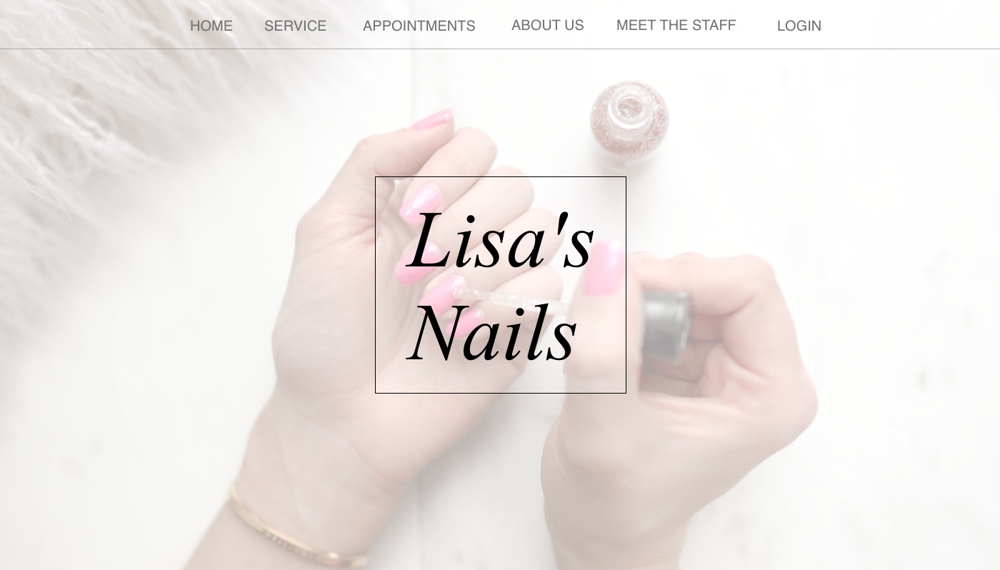 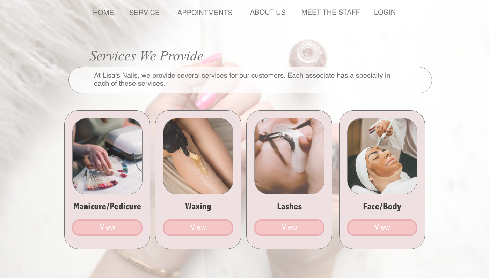 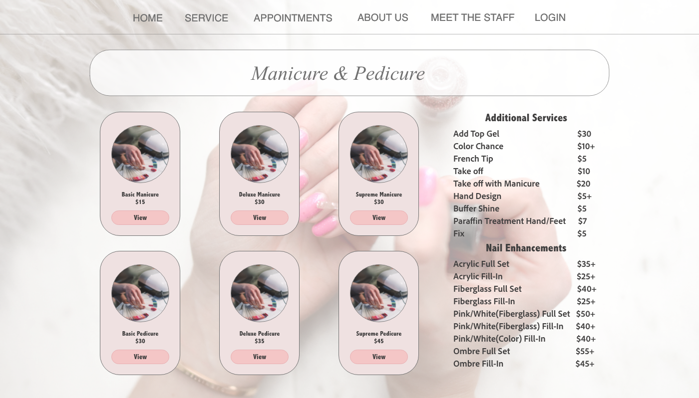 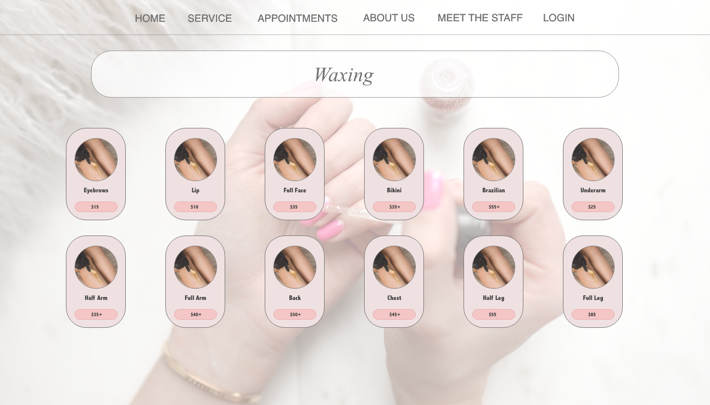 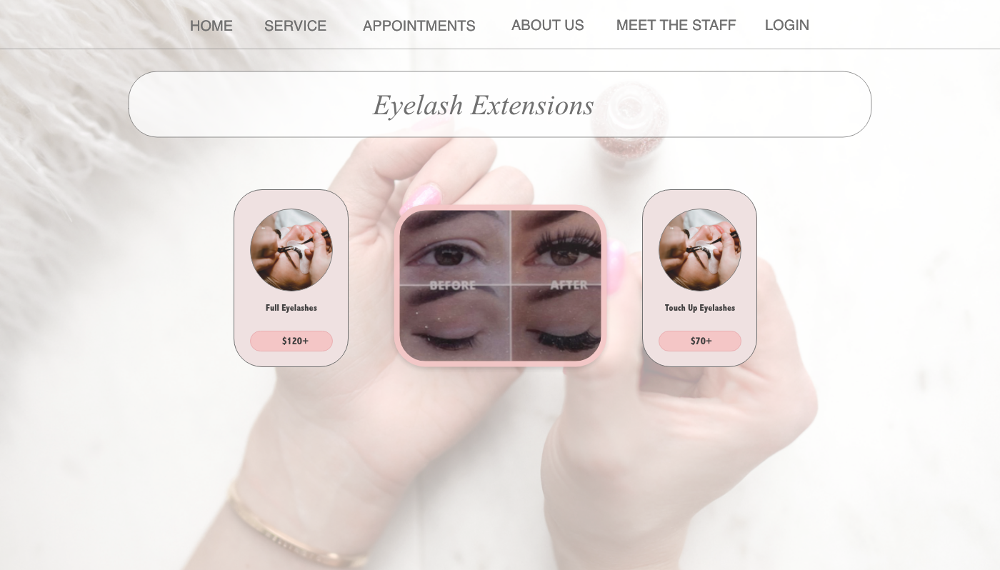 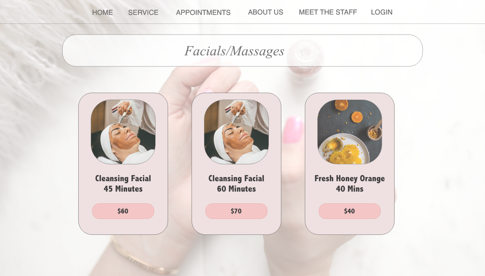Appointment Page
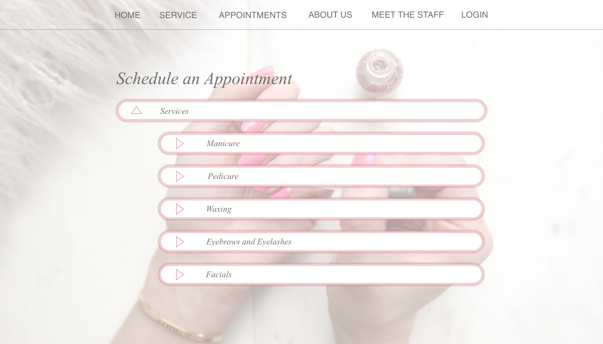 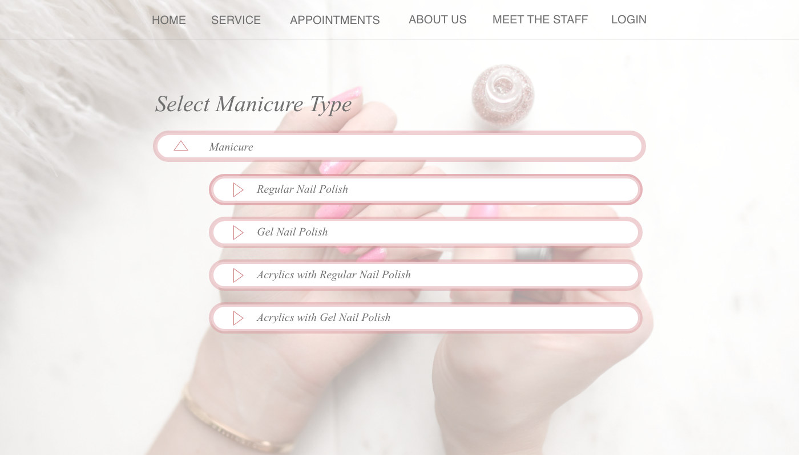 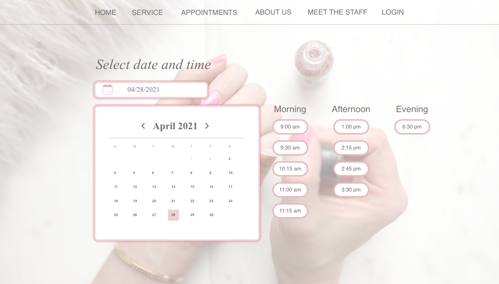 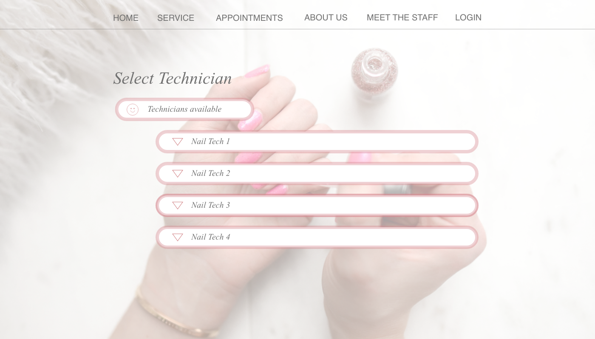 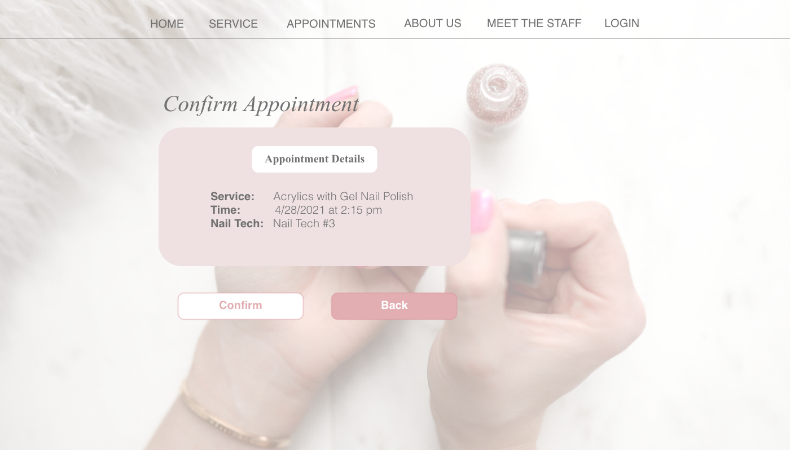 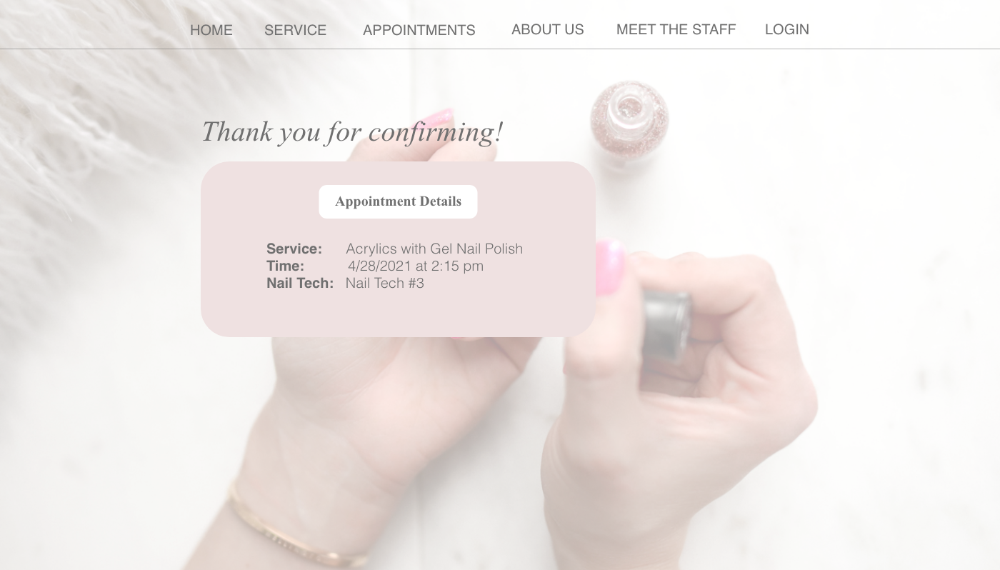About Us, Meet the Staff and Login/Signup Page
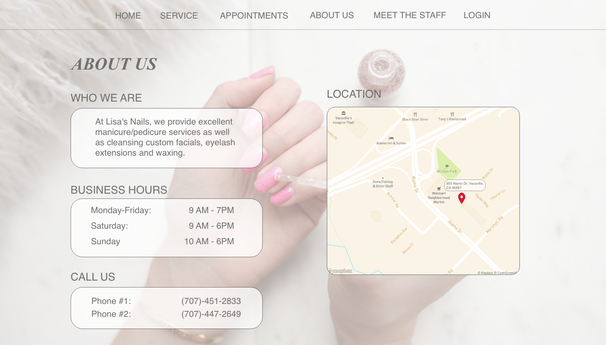 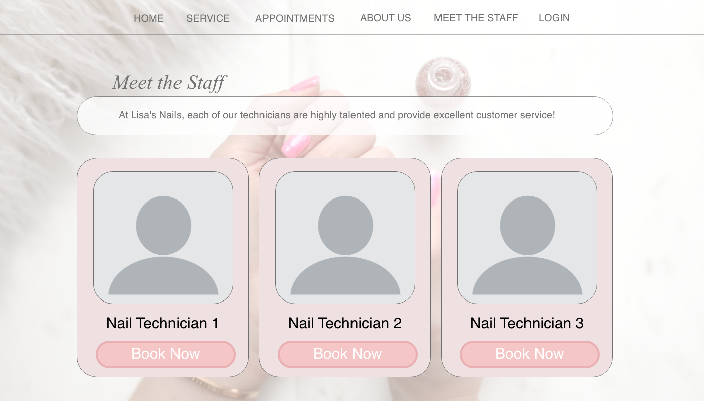 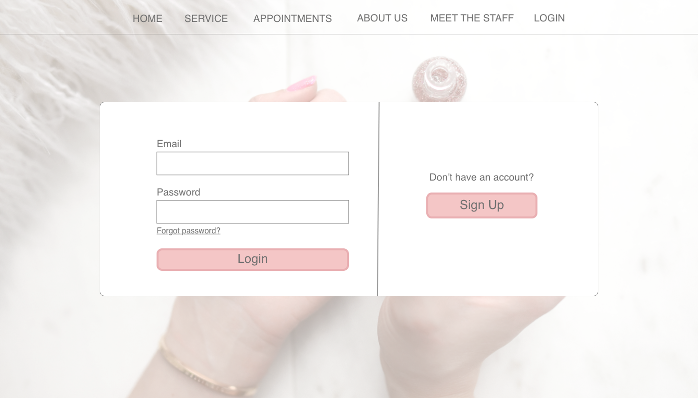Timeline:
Sprint 0 (Feb 14 - Feb 21): Product Charter Document
during this sprint we drafted and went over the Product Chater
Document with our client and professor.
Sprint 0 (Feb 14 - Feb 21): Product Charter Document
during this sprint we drafted and went over the Product Chater
Document with our client and professor.
Sprint 1 (Feb 23 - Mar 5): Context Diagrams and Event
Table during this sprint we spoke to our client to get a better
understanding of the project in mind as well as set up a basic meeting
schedule. As a group we created our context diagram, event table and
finished the signatures on the Charter Document.
Sprint 2 (Mar 9 - Mar 19): Basic Prototypes during this
sprint we split into groups and developed multiple page layouts for a
website to allow our client to pretty much pick and pull their perfect
website in mind, this also allowed for them to tell us in more detail
what they liked or didnt like and would want to add or remove to a
webpage.
Sprint 3 (Mar 30 - Apr 9): High Fidelity Prototypes
during this sprint we started our embark with adobe XD and creating a
high fidelity prototype that our client could interact with as well as
give input to allow for any more changes they wanted implemented.
Sprint 4 (Apr 13 - Apr 23): Presentation duringthis
sprint we created a presentation portfolio of the basics of our
project allowing for our clients and peers to be able to see our
thought process and understand the project we were presented with,
while seeing how we attacked the given problem.
Sprint 5 (Apr 28 - 30): Project Webpage and Prototype
Document we created and did the first draft of out Project webpage and
well as our prototype document.